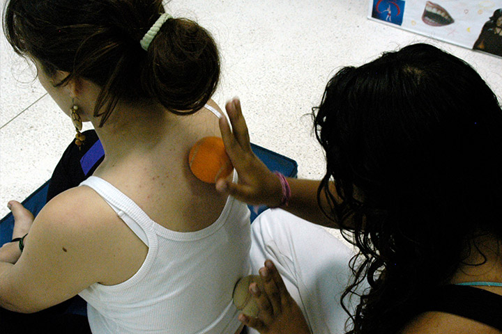

Módulo 3 | Aula 3 A educação em saúde e a educação popular em saúde como estratégias para a assistência à saúde na APS
Programação das ações educativas e as DCNT

A discussão das possíveis soluções para enfrentamento das questões que compõem o “percebido destacado” é momento de construção de operações que transformem nossas intenções em gestos.
- Rodas de conversa com a equipe de APS sobre a situação das DCNT no território, abordando dados de prevalência, incidência, características sociais e demográficas dos portadores e os serviços ofertados pela UBS. Sugerimos a leitura e discussão coletiva das linhas de cuidado para as condições crônicas produzidas pelo Ministério da Saúde (MS) (linhasdecuidado.saude.gov.br) para identificar, dentre as atividades preconizadas para a APS, as ações educativas a serem realizadas como medidas promocionais da saúde em qualquer etapa da história natural da doença.
- Com base nas normativas, protocolos e metas do MS construir indicadores para análise, acompanhamento, monitoramento e avaliação do processo. Considerando que as condições crônicas exigem cuidado ampliado, que incluem intervenções terapêuticas nas manifestações agudas, exames complementares, assim como ações preventivas e de promoção da saúde, os indicadores dizem respeito, direta ou indiretamente, à cobertura da UBS, ao acompanhamento do usuário acometido, à integração com a rede de atenção secundária e especializada, ao acesso a serviços complementares e medicamentos e os itinerários terapêuticos.
- Estabelecimento de um grupo de trabalho (GT) composto por profissionais escolhidos nas rodas de conversa com a equipe, contemplando a multiprofissionalidade. Também devem compor o GT pelo menos um membro da gestão da UBS e educadores populares representantes dos grupos e comunidades. O GT é responsável pela condução organizacional e pedagógica das ações.
- Levantamento das possíveis ações educativas e organização das propostas em três dimensões: individual, familiar e comunitária. Na dimensão individual estão as ações a serem realizadas com cada portador de condição crônica, abordando principalmente estratégias sobre autocuidado, adoção de atitudes de prevenção do agravamento do problema e promoção da saúde a seu modo de viver, por meio de entrevistas informais e formalizadas na UBS. Com as famílias, são realizadas atividades nos domicílios no sentido de criar condições para o suporte físico, psicológico, social e afetivo ao portador, realizadas em visitas agendadas ou emergenciais utilizando diversas estratégias pedagógicas. Na dimensão comunitária, as ações são voltadas para a comunidade em geral, alinhadas à dinâmica de cada organização ou grupo existente, abrangendo aspectos da determinação social do processo de saúde e doença que suscitem mobilização e intervenções coletivas e intersetoriais.
- Definição dos objetivos de aprendizagem e estratégias pedagógicas das ações educativas. Os objetivos de cada ação educativa são referenciados ao que se encontra expresso no inédito viável construído nas rodas de conversa, coerente com o contexto e possibilidades tecnológicas de atuação da equipe, detalhado em relação às temáticas, aos responsáveis e à utilização do tempo.
Uma das ações educativas deve ser a avaliação. É uma ação constante que se faz presente desde a concepção do que fazer. É participativa e tem o objetivo maior de proporcionar aprendizagens. Deve ser participativa e pressupõe negociação, pactuação e decisão coletiva entre os atores envolvidos, organizada em cogestão, conduzida pelos diferentes atores de uma instituição, organização ou movimento social com a intencionalidade de transformação.
Os roteiros, guias ou relatórios de avaliação devem ser específicos da intervenção embora articulados com o relatório de gestão da UBS e são elaborados a partir das seguintes questões:
- O que será avaliado? Quais aspectos do programa/intervenção serão considerados para análise?
- Quais os parâmetros para julgar o sucesso alcançado?
- Que evidências serão utilizadas como indicadores de desenvolvimento das ações?
- Que conclusões serão dadas aos resultados da análise?
- Os resultados serão assimilados e direcionados para melhorar a intervenção?